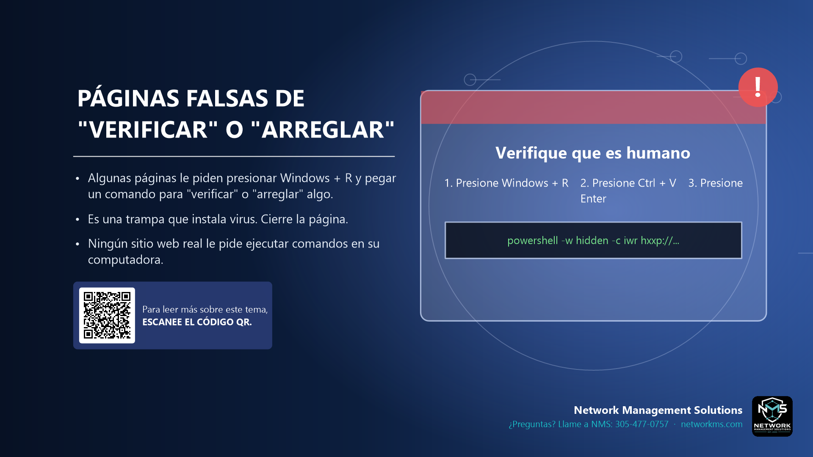

Páginas falsas de "verificar" o "arreglar"

- Algunas páginas le piden presionar Windows + R y pegar un comando para "verificar" o "arreglar" algo.
- Es una trampa que instala virus. Cierre la página.
- Ningún sitio web real le pide ejecutar comandos en su computadora.
Una estafa cada vez más común muestra un CAPTCHA falso ("Verifique que es humano") o un error falso con pasos: presione Windows + R, presione Ctrl + V y presione Enter. La página ya copió un comando malicioso en su portapapeles.
Si sigue los pasos, ejecuta el programa del atacante con sus permisos. Ningún sitio web, CAPTCHA ni actualización del navegador funciona así.
Si ve esto, cierre la pestaña. Si ya lo ejecutó, desconéctese de la red y llame a NMS de inmediato.
¿Tiene dudas sobre un correo, mensaje o llamada? Llame a NMS antes de hacer clic: 305-477-0757 · networkms.com